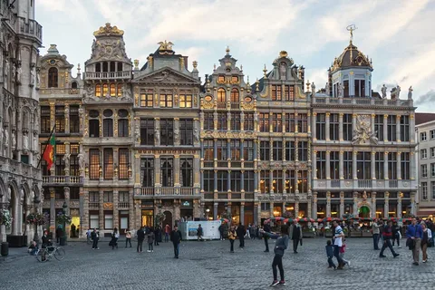
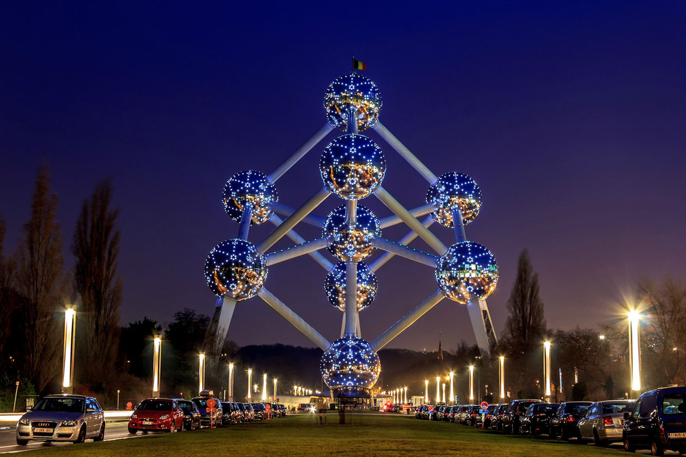
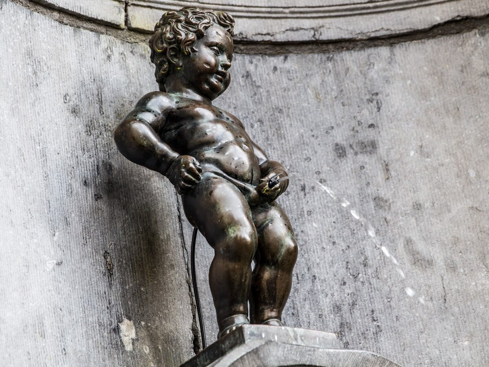
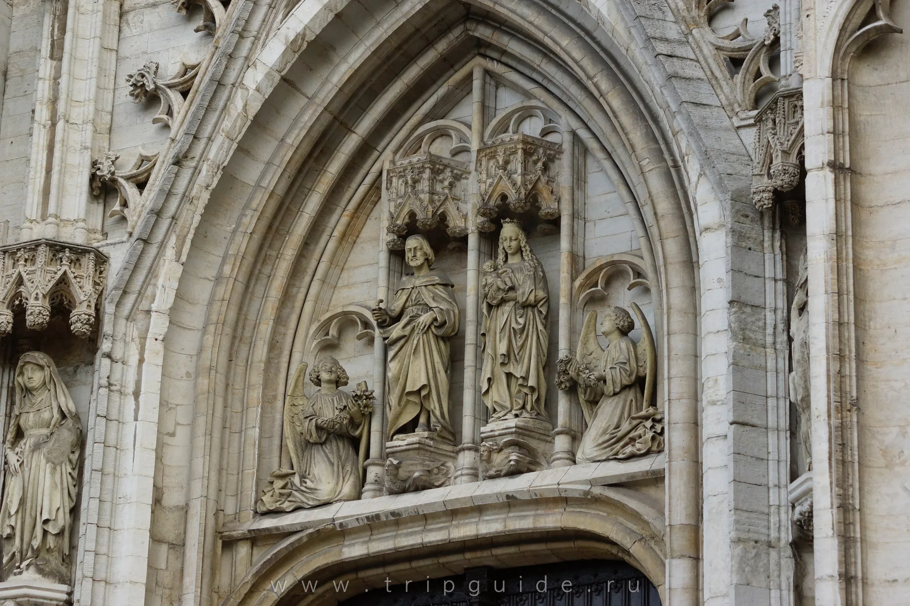
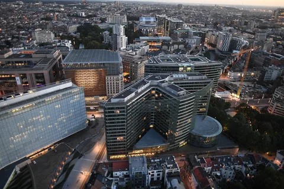

Гранд-Плас (Grand Place)
Гранд-Плас – Брюссельдің басты алаңы және Еуропадағы ең әдемі архитектуралық ансамбльдердің бірі. Бұл жерде тарихи ғимараттар, муниципалды әкімшілік және көркемдік декорациялар орналасқан.
Брюссельдің көрікті жерлері Grand Place - ұзындығы 110 метр және ені 70 метр болатын қаладағы ең үлкен алаңдардың бірі. Ол 17 ғасырдың ғажайып сәулетімен қоршалған: гильдия және готика стиліндегі раундиум. Қалалық мэрияның керемет ғимараты Архангел Майклдың шебер орындалған мүсіні бар керемет әдемі мұнарамен безендірілген. Сондай-ақ патшаның үйі де орталық алаңның кез келген қонағын бей-жай қалдырмайды Атомиум
Атомиум – Брюссельдің символы болып табылатын ерекше металл құрылым. Бұл орын қаланың ғылым мен өнер саласындағы жетістіктерін бейнелейді. Құрылымның ішінде көрме залдары мен панорамалық мейрамхана бар. 
Маннекен Пис (Manneken Pis)
Маннекен Пис – Брюссельдің көңілді әрі ерекше символы. Бұл кішкентай мүсін қала тұрғындарының еркін рухын бейнелейді. Жыл бойы мүсін түрлі киімдер киіп тұрады, бұл дәстүр туристерді қызықтырады.
Брюссельдің көрікті жерлеріMannequin Pis - «Manneken Pis» деп аталатын биіктігі 60 см мүсіні бар әйгілі сенсациялық субұрқақ. Ол орталық алаңға жақын орналасқан, оның сыртқы түрі әртүрлі аңыздар мен әңгімелермен көмкерілген. Әулие Михаэль және Әулие Гудула соборы - бірнеше дәуірлерді біріктіретін ерекше сәулетімен керемет ғибадатхана. Ғимарат Бельгияның қамқоршыларының құрметіне салынған. 
Қасиетті Михаил және Гудула соборы
Бұл собор Брюссельдің маңызды діни және тарихи орны. Орта ғасырлық готикалық архитектурасы мен ерекше витраждары көрермендерді таңғалдырады. 
Еуропа одағының кварталы
Брюссель Еуропа одағының астанасы ретінде маңызды рөл атқарады. ЕО ғимараттары орналасқан квартал саяси және тарихи қызығушылық тудырады. 